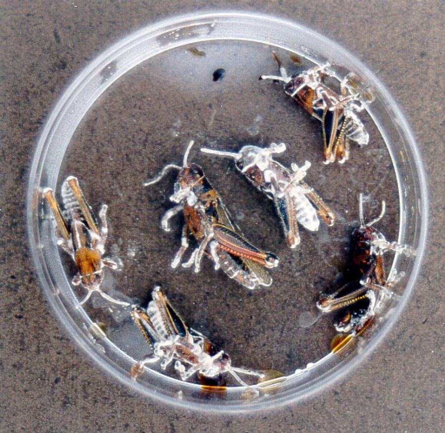

ब्यूवेरियाBeauveria
Beauveria bassiana · Cordycipitaceae · FNG-0027

- Scientific name वैज्ञानिक नाम
- Beauveria bassiana (Bals.-Criv.) Vuill.
- Family कुल
- Cordycipitaceae
- Hindi हिंदी
- ब्यूवेरिया
- Local names स्थानीय नाम
- beauveria, byuveria, white muscardine
- Status here यहाँ की स्थिति
- native
- Movement आवागमन
- Resident, here all year
- IUCN IUCN
- not evaluated
- Review समीक्षा
- audited and independently read
When to look कब देखें
Present all year. साल भर मौजूद।
ब्यूवेरिया / Beauveria
Beauveria bassiana (Bals.-Criv.) Vuill. — Cordycipitaceae
ब्यूवेरिया — एक फफूँद जो कीड़ों को मार देती है। बेहद छोटे बीज जमीन में और पौधों पर उगते हैं, और अगर कीड़ा इस पर चलता है तो बीज उसके शरीर को छेद देते हैं। अंदर बढ़ते हैं, कीड़े को सड़ा देते हैं — कीड़े का शरीर सफेद हो जाता है। दशक से भारत में यह कीटों को नियंत्रित करने की दवा के तौर पर बेची जाती है। खेत के कीड़ों — तेले, चने की इल्ली, सफेद मक्खी — को इसी से नियंत्रित किया जाता है। कोई नुकसान नहीं, सारा पर्यावरण सुरक्षित, पर किसान कीटनाशक को छोड़ता नहीं।
Quick Identification त्वरित पहचान
| Feature | Description |
|---|---|
| Culture colour | White, creamy mycelium; white powdery spore layer |
| Growth rate | Slow to moderate (10–14 days to sporulation) |
| Spore colour | White; distinctive in contrast to other entomopathogenic fungi |
| On insect host | Infected insect becomes mummified; white coating covers body |
| Substrate | Grows on nutrient media, soil, plant debris |
| Texture | Powdery to granular appearance |
Field tip: Beauveria is identified by white powdery sporulation on any substrate. When insects die near crop plants in monsoon, look for white coating (mummified insect cadaver) — likely Beauveria. The white colour distinguishes it from Metarhizium (which produces green spores).
हिंदी: सफेद फफूँद, कीड़ों पर। मरा हुआ कीड़ा सफेद हो जाता है।
Morphology आकारिकी
Fungal structures (visible with microscope):
| Structure | Appearance |
|---|---|
| Mycelium | Hyaline (clear) to pale, highly branched; forms dense white basal mat |
| Conidiophore | Short, branched; 10–50 µm; arises from mycelium in clusters or ramified patterns |
| Conidium (spore) | Oval to globose; 2–3 × 1.5–2 µm; white in mass; powdery appearance; thousands per conidiophore |
| Chlamydospore | Thick-walled, round; 5–8 µm diameter; survival structure |
| Colour mechanism | Spore wall colour due to presence of waxy hydrophobic layer (melanin absent, unlike Metarhizium) |
Culture characteristics:
- Slower growth than saprophytic fungi like Trichoderma
- Requires nutrient-rich media; less efficient at utilizing minimal carbon sources
- Sporulation is prolific once established; colonies become powdery-white
- Produces secondary metabolites (beauvericin, others) toxic to insects
Ecological Role पारिस्थितिक भूमिका
Entomopathogenic fungus: Beauveria bassiana is an obligate insect pathogen, infecting a broad range of arthropods including beetles, aphids, whiteflies, thrips, grasshoppers, and scale insects. It causes muscardine disease (mummification of the host).
Infection mechanism:
- Spore adhesion: Spores stick to insect cuticle via mucilaginous coating on spore surface
- Penetration: Spore germinates; appressorium (specialized structure) forms; enzymes (proteases, lipases) penetrate cuticle
- Colonization: Mycelium grows inside the insect hemocoel (body cavity); colonizes muscle, digestive, and nervous tissues
- Mummification: Mycelium consumes internal tissues; insect hardens, becomes mummified; white powdery spore layer covers body
- Spore dispersal: Spores released from mummified cadaver; wind-dispersed; land on new hosts
Ecological role in crop systems: Natural populations of Beauveria suppress insect herbivore populations. In untreated fields, Beauveria infections can reduce insect populations by 20–40%, depending on conditions.
Host range: Extremely broad host range (100+ insect species); not host-specific. This generalist strategy makes it effective against multiple crop pests simultaneously.
Life Cycle / Phenology जीवन चक्र
- Mycelial persistence: Persists in soil for months as mycelium and chlamydospores; populations remain stable between crop seasons
- Spore production: Occurs on infected insects; spores produced continuously while mummified cadaver remains in field
- Infection: Spore contact with live insect initiates infection; 5–10 days from infection to mummification (temperature-dependent; faster at 20–25°C)
- Sporulation on cadaver: Spores produced for 1–3 weeks after insect death; older cadavers lose spore viability
- Environmental persistence: Spores stable in soil for months; viable on plant surfaces for days to weeks
Agricultural / Human Relevance कृषि प्रासंगिकता
Biocontrol agent (commercial use):
Beauveria-based products are registered and sold as biopesticides globally, including in India. Used for:
- Spray application: Aqueous suspension of spores (10⁸–10⁹ spores/mL) sprayed on crop foliage during monsoon/post-monsoon when target pest populations are high
- Target pests:
- Cotton: Helicoverpa armigera (gram pod borer/cotton bollworm), whiteflies
- Vegetables: Whiteflies, thrips, aphids
- Sugarcane: Pyralid moths
- Various crops: Grasshoppers
- Efficacy: 30–60% pest reduction when conditions are favorable (high humidity, warm temperature); not a complete replacement for chemical pesticides
Documented field results (eastern UP):
- Cotton: 35–50% reduction in Helicoverpa incidence with weekly Beauveria sprays during monsoon
- Vegetable crops: 40–60% reduction in whitefly and thrips damage
- Combined with resistant varieties, achieves commercially acceptable pest control
Advantages:
- Safety: Non-toxic to mammals, birds, and most beneficial insects
- Environmental compatibility: No chemical residue; no bioaccumulation
- Sustainability: Populations can persist in soil, providing sustained control
Limitations:
- Slow action: Takes 7–10 days for visible control, vs. 1–2 days for chemical pesticides
- Weather dependent: Requires high humidity (>70%); rain or dew necessary for effective infection
- Cost: More expensive per application than broad-spectrum chemical pesticides
- Farmer adoption: Low, because farmers expect immediate kill and are habituated to chemical pesticides
Government promotion: ICAR and state agricultural departments promote Beauveria-based biocontrol products under integrated pest management (IPM) schemes; subsidies provided in some years.
हिंदी: कीटों को मारती है, पर धीमी है। बारिश के मौसम में ठीक से काम करती है। खेत में सुरक्षित है।
Expected Locally स्थानीय रूप से अपेक्षित
Not a field record. Written from published accounts for eastern Uttar Pradesh. No confirmed local sighting yet — if you have seen it, that is what the atlas needs.
अभी तक स्थानीय पुष्टि नहीं। यह विवरण प्रकाशित स्रोतों से है, किसी अवलोकन से नहीं।
Beauveria bassiana is expected in Basti and Ayodhya districts wherever insects occur, particularly in monsoon and post-monsoon months. The fungus should be visible as white mummified insects on crop plants or soil. A confirmed local record would require isolation of Beauveria from infected insect cadavers or soil samples, or clear microscopic identification of conidiophores and spores, with place and date documented.
Distribution वितरण
Global range: Worldwide; found on every continent. One of the most widespread entomopathogenic fungi globally.
In India: Ubiquitous; isolated from soils and insects in all states.
In Uttar Pradesh: Common throughout the state, particularly in agricultural soils and on crop-associated insects.
In Basti district / eastern UP: Expected in all cultivated areas where insects are present, particularly during monsoon and post-monsoon seasons.
Research Questions शोध प्रश्न
- What is the natural population density of Beauveria in Basti district soils, and does it vary seasonally? — Soil sampling and isolation on selective media.
- Which insect species in local cotton and vegetable crops are naturally infected by Beauveria, and at what frequency? — Field surveys; microscopy and culture of mummified insects.
- Does weekly spray of locally isolated Beauveria strains reduce cotton bollworm (Helicoverpa armigera) damage compared to untreated controls in farmer fields? — Multi-farmer field trial.
- Can Beauveria populations in soil be enhanced through compost application, and does this correlate with reduced insect pest pressure? — Soil population monitoring trial.
- What is the cost-benefit of Beauveria biocontrol vs. chemical pesticide alone in vegetable production in eastern UP? — Farmer enterprise accounting across 5–10 farms.
Similar Species मिलती-जुलती प्रजातियाँ
| Species | How to tell apart | हिंदी |
|---|---|---|
| Green muscardine fungus (Metarhizium anisopliae) | Also kills insects, but the dead insect turns olive-green, not white; sold for the same uses | हरी मस्कार्डीन: मरा कीट हरा हो जाता है |
| Cordyceps and allies | Grow a stalk or club out of the dead insect, often from soil; Beauveria grows only a white crust | कॉर्डीसेप्स: मरे कीट से डंठल निकलता है |
| Saprophytic white moulds on a dead insect | Grow after death on any carcass; Beauveria kills the insect first, which often stiffens in place on a leaf or stem | मरे कीट पर बाद में उगने वाली सफ़ेद फफूँद |
Field rule: A stiff dead insect covered in a dense white, powdery crust, still clinging to a leaf or stem, is the white muscardine of Beauveria; an olive-green crust is Metarhizium; a stalk growing out of the body is a Cordyceps.
Taxonomy & Classification वर्गीकरण
Original description. Beauveria bassiana was originally described by Michele Giacomo Balsamini and Dario Cristoferi as Isaria bassiana in 1844. It was transferred to Beauveria by Ernest Vuillé in 1912. The species epithet bassiana refers to Count Agostino Bassi, an Italian naturalist who first discovered the connection between fungi and insect disease.
Subspecies. No subspecies are formally recognized.
Family and order placement. Order Hypocreales, family Cordycipitaceae. This family includes many entomopathogenic fungi.
Phylogenetic notes. Beauveria bassiana is a complex of cryptic species; molecular work has revealed significant genetic diversity within "B. bassiana" sensu lato. Field isolates in India typically belong to B. bassiana sensu stricto.
IUCN status rationale. Not evaluated. The species is ubiquitous and abundant; conservation status not applicable.
Photo Gallery फोटो गैलरी
Photos needed आवश्यक फोटो
- [ ] White mummified insect on plant (सफेद कीड़ा)
- [ ] Close-up of sporulation on cadaver (माइक्रोस्कोप)
- [ ] Culture plate with white mycelium (प्रयोगशाला)
- [ ] Field-infected pest (खेत में संक्रमित कीड़ा)
No photos yet — add field photos to media/species/beauveria/ and run node scripts/sync_photos.js.
References संदर्भ
- Balsamini-Cristoferi (1844). Insecticidal fungi. [original description context]
- Vuillé, E. (1912). Monographie de Beauveria — un genre de champignons parasites des insectes. Thèse, Université de Genève.
- Hajek, A.E. & St. Leger, R.J. (1994). Interactions between fungal pathogens and insect hosts. Annual Review of Entomology 39: 293–322.
- Inglis, G.D. et al. (2001). Biology, ecology and applications of Beauveria bassiana for insect pest control. Biocontrol 6: 147–156.
- Jaronski, S.T. (2010). Ecological factors in the inundative use of fungal entomopathogens. BioControl 55: 159–185.
- GBIF Occurrence Data — Beauveria bassiana, India (2026).
Source file: species/fungi/molds/beauveria.md